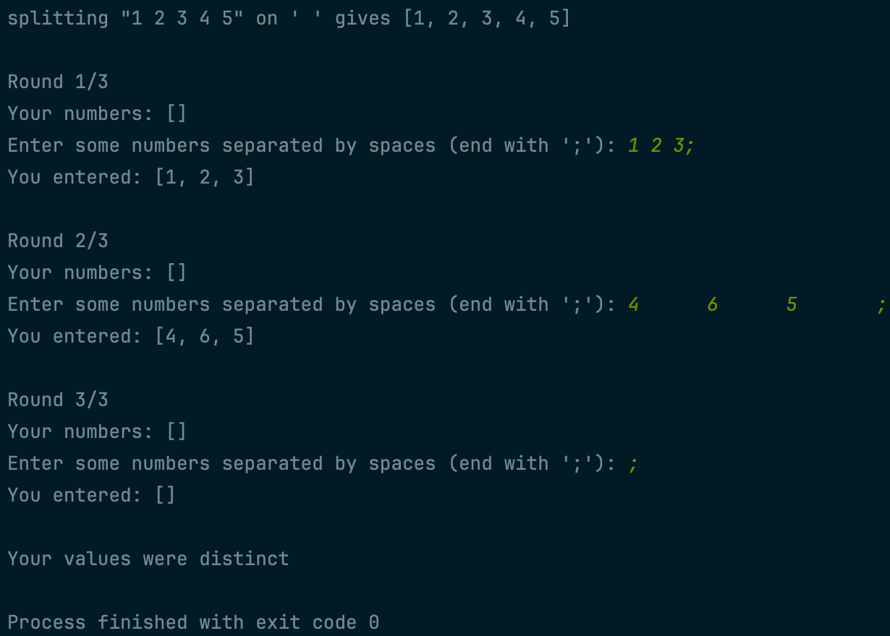
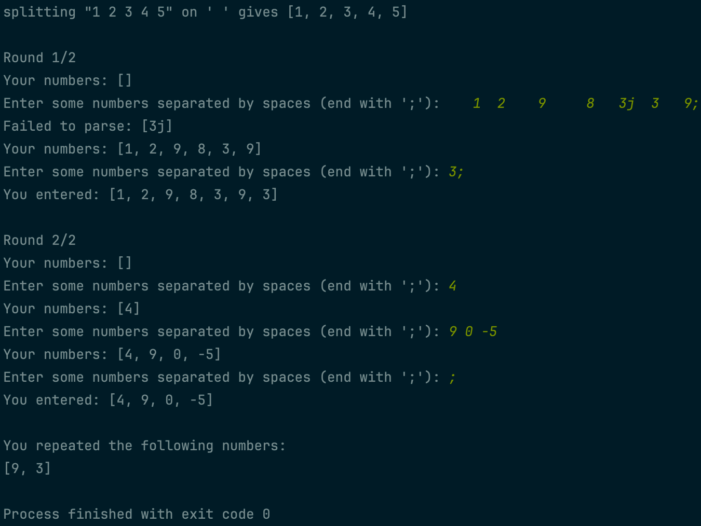

In this project, you’ll work on a few things to help you practice using vectors! These tasks will also show you good use cases for vectors. Complete the following tasks to complete the project! Example output is shown below.
- Copy your overloaded insertion operator from one of the array projects and change it to work with vectors.
- Write a function called
splitwhich splits a string on some character delimiter and returns a vector with the resulting substrings. - Test your
splitfunction on its own. You should print the string you’re testing and the delimiter your splitting on as well as the results. - Write a function called
get_user_numswhich repeatedly asks the user to enter numbers separated by spaces. The function shouldn’t end until the user enters a semicolon to terminate their input. This means it’s possible for the user’s input to span multiple inputs, so the function should accommodate this. Make sure to handle extra spaces if they appear as well as bad inputs. For this particular function, all acceptable numbers should be accepted, while all bad inputs should be rejected and reported. - Call your
get_user_numsfunction a random number of times between two and five and store each round of inputs in a vector. Make sure to report the current round number and the total number of rounds so the user doesn’t worry that the program’s broken! Also acknowledge the user’s input for each round by printing it. - Write a function called
distinct_repeated_valswhich accepts a two-dimensional vector of signed 32-bit integers and returns a vector containing of the integer values that are repeated at least once in the input vector. - Call this function on your vector of user inputs and report the results to the user. Make sure to say they entered distinct values if the returned vector is empty!
 Example output with good input and distinct values
 Example output with bad input and repeated values